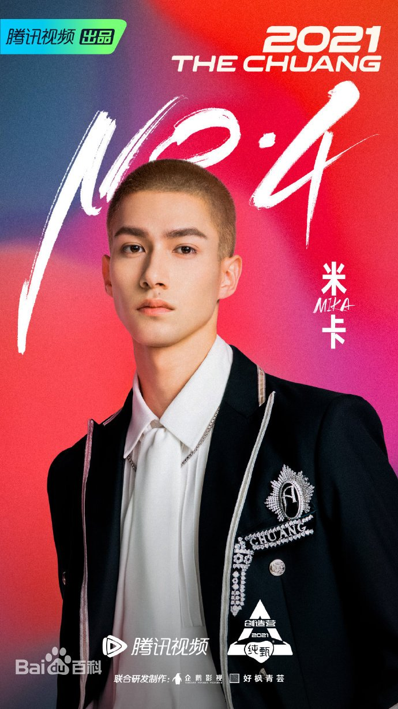
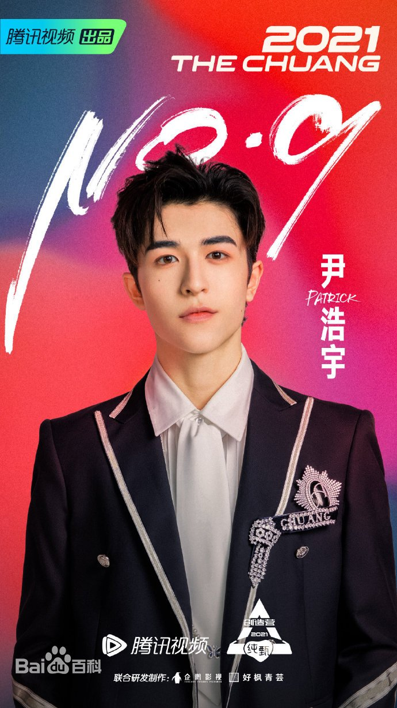
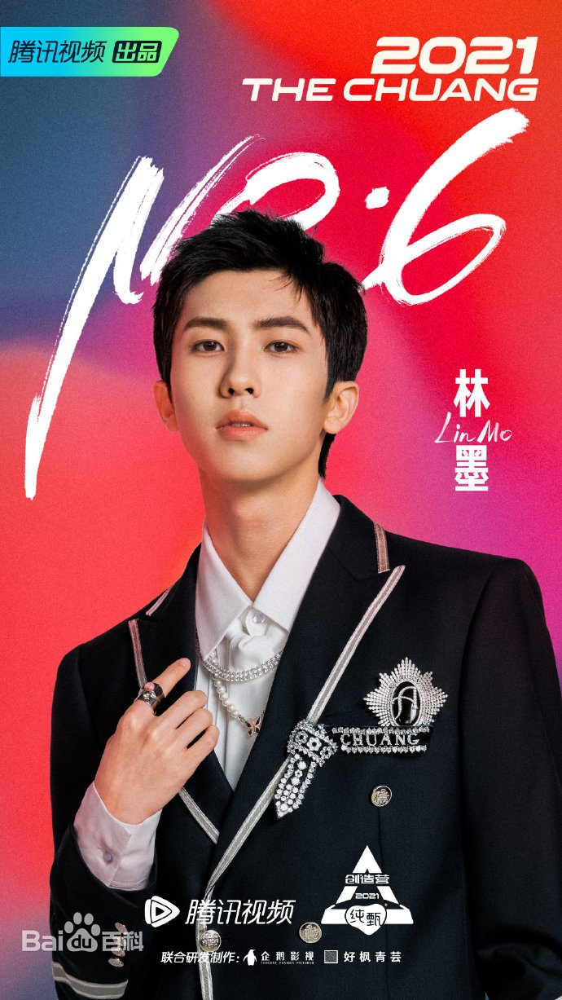
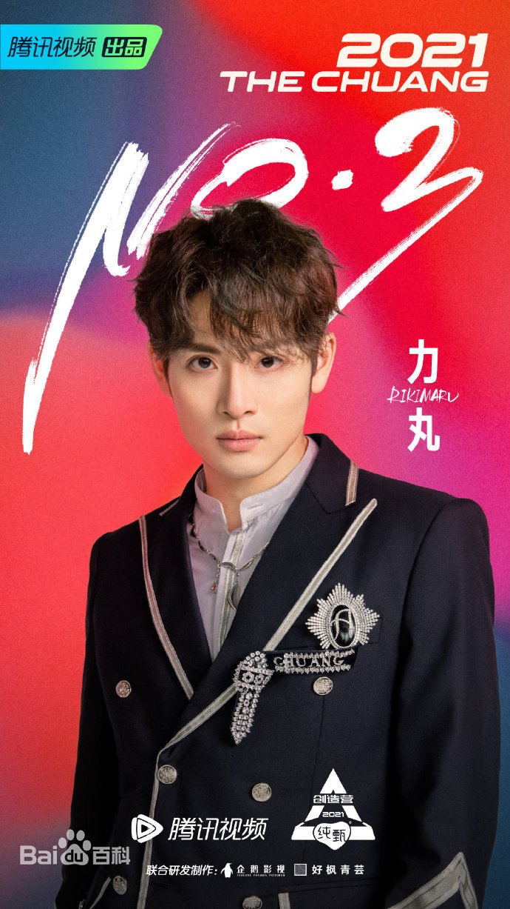

米卡（Hashizume Mika），1998年生人，人间猕猴桃，行走的CD，猛男的外表下有一颗温柔的心，妥妥的反差萌。
团队vocal当担，初舞台以一首《永不失联的爱》收获了一大批粉丝，相关视频在B站上点击量超千万，成为首个撑腰王，最后以第四名的成绩出道。
尹浩宇(Patrick)，2003年生人（年纪好小的弟弟），泰德混血，全能艺人，既会演戏，又能唱歌跳舞，还能Rap背唐诗（哈哈哈），中文说得很好！！！最后第九名出道。
木木黑土（bushi）林墨，本名黄其淋，2002年生人，世界著名“尴尬家”，全能喜剧人，但是！！唱跳实力俱佳，《love boy88》值得单曲循环！最后第六名出道。
力丸，本名近田力丸（Chikada Rikimaru），零国语言拥有者（哈哈哈哈，有被笑到），世界级编舞大师，四万一节的编舞课，你值得拥有！最后第三名出道。